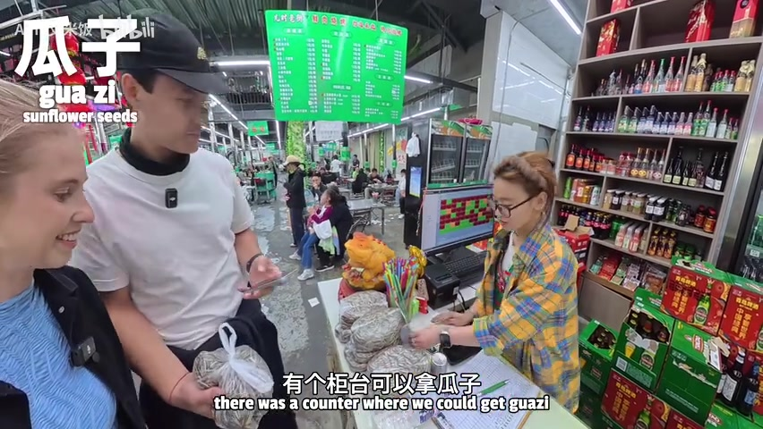
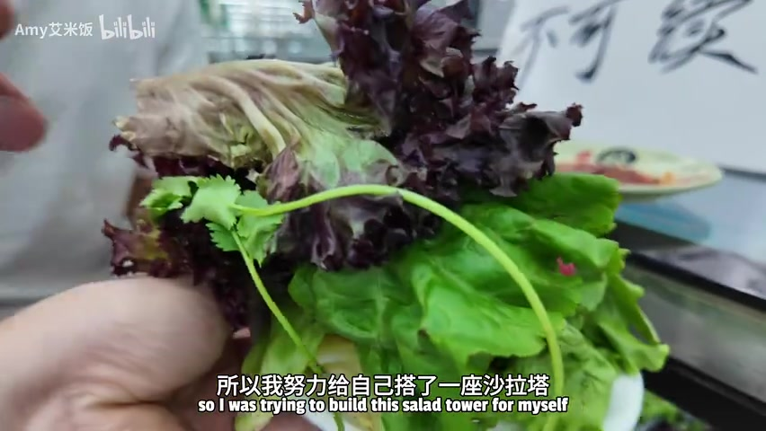
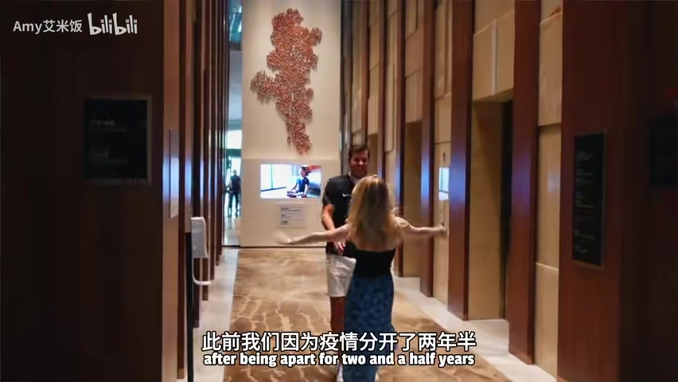

01
中文
I'm taking my German husband to a good old-fashioned North East China BBQ.
EN
我要带我的德国老公去吃一家正宗的老派东北烧烤。
表达提示good old-fashioned（正宗老派的）；North East China BBQ（东北烧烤）
Scene English · 美食Vlog · 跨文化挑战
Challenging My German Husband at a Dongbei BBQ! What He Can't Accept…
🎧 语音讲解
Opening: Taking My German Husband for Dongbei BBQ
情境Amy 要带德国老公 Derek 去长春的老牌东北烧烤店，还预告本视频有挑战和彩蛋。英文原声为主，中文观众需借助字幕。语域：美食Vlog，兴奋预告。
I'm taking my German husband to a good old-fashioned North East China BBQ.
我要带我的德国老公去吃一家正宗的老派东北烧烤。
表达提示good old-fashioned（正宗老派的）；North East China BBQ（东北烧烤）
You're not gonna wanna miss his reaction to that.
你们绝对不会想错过他对这道菜的反应。
表达提示not gonna wanna miss（绝对不想错过）
Stay tuned!
敬请期待！
表达提示stay tuned（敬请期待/别走开）
老派正宗 → good old-fashioned / classic and authentic
敬请期待 → stay tuned / don't go anywhere

Challenge Rules: Adding Dishes for Each Other
情境Amy 想给视频加点乐子，于是和 Derek 互相挑战：等选完菜后各给对方加一样「有挑战性」的菜。Derek 还提出想让 Amy 给整个视频做英文配音，作为他学习的机会。语域：Vlog对谈，轻松调侃。
We're just throwing random challenges at each other throughout this video.
这个视频里我们会互相抛各种随机的挑战。
表达提示throw challenges at（抛出挑战）；throughout（贯穿）
Once we've completed our basket, I will add one thing that might be challenging for you to eat.
等我们选完菜，我会加一样你可能吃不下的东西。
表达提示might be challenging to eat（吃起来有挑战的）
Maybe it's a good skill to have for my future videos.
这也许是我未来视频需要的一项好技能。
表达提示a good skill to have（值得掌握的技能）
抛挑战 → throw challenges at / play a challenge game
值得掌握的技能 → a good skill to have / a useful skill

Entering: A Bustling BBQ Restaurant
情境Derek 第一次来这家传统东北烧烤店，店里非常忙碌，还有人踩着平衡车送餐。服务员都很友好，还遇到同名的小 Amy。等位时他们买了瓜子嗑。语域：Vlog现场，热闹氛围。
You can see the place is very busy, and it's busy for a reason — very good food.
你可以看到店里非常忙，忙是有道理的——因为东西很好吃。
表达提示busy for a reason（忙得有道理）
They're even delivering food on these hoverboards, which is very cool.
他们甚至用平衡车送餐，非常酷。
表达提示deliver food（送餐）；hoverboard（平衡车）
My name is also Amy!
我的名字也叫Amy！
表达提示同名巧合的表达
忙得有道理 → busy for a reason / popular for a good reason
送餐 → deliver food / bring out the dishes
Ordering: Best-Seller Stamps and Potatoes
情境店里在畅销菜上盖了红色印章，方便点单。Amy 想吃烤土豆，还发现了没见过的东北土豆泥。Derek 则从德国带来「香肠被惯坏」的背景，挑战 Amy 加一道他能接受的香肠。语域：Vlog点菜，趣味互动。
What makes the ordering process easier is they put a little stamp of approval on their top best sellers.
让点单更简单的是，他们会在最畅销的菜上盖一个认可章。
表达提示a stamp of approval（认可章）；best sellers（畅销款）
It's like a mix of potato, egg, and onion.
它像是土豆、鸡蛋和洋葱的混合。
表达提示a mix of（混合）
I'm just spoiled by the sausages in Germany — they're so good.
我就是被德国的香肠惯坏了，它们太好吃了。
表达提示spoiled by（被…惯坏）
认可章 → a stamp of approval / a seal of quality
被惯坏 → spoiled by / have high standards thanks to
The Salad Bar: 18 RMB, All You Can Pile
情境店里有个黄瓜沙拉吧，18块钱一次，盘子能装多少装多少。Amy 堆了一座沙拉塔，顺便教德语：黄瓜叫 Gurke、沙拉叫 Salat、萝卜叫 Radieschen。随后她用自创酱料做蘸酱，尝了一口又辣又香。语域：Vlog现场，教德语+拌酱。
You only pay 18 RMB once, and you can put as much on your plate as possible.
你只需要付一次18块钱，然后盘子里能装多少就装多少。
表达提示as much as possible（能装多少装多少）
I'll give you guys a German lesson.
我给你们上一节德语课。
表达提示give a lesson（上课）
Oh, it's spicy — but good!
哦，有点辣——但是好吃！
表达提示spicy（辣的）；转折但肯定
随便装 → as much as possible / all you can pile
上一课 → give a lesson / teach you something

First Dish: Dongbei Mashed Potato
情境招牌菜土豆泥上桌，配大葱和鹅蛋，是餐厅销量第一。Amy 坚持要一口把所有配料一起吃。Derek 评价：外皮有一点嚼劲、内里软糯，蘸酱咸辣蒜香坚果香俱全。语域：Vlog试吃，夸张好评。
You have to get a bite with everything together.
你得一口把所有东西一起吃进去。
表达提示with everything together（把所有配料一口吃）
The outside has a slight chewiness, and it's soft on the inside.
外皮有一点嚼劲，里面很软。
表达提示chewiness（嚼劲）；soft on the inside（内里软）
That dipping sauce is salty, spicy, garlicky, nutty, flavoury.
那个蘸酱咸、辣、蒜香、坚果香，味道十足。
表达提示叠词式口感形容
一口全吃 → a bite with everything together / all in one bite
口感形容 → chewy on the outside / soft and glutinous inside
Tofu and Beef Skewers: Reviewing in German
情境烤豆腐裹着大葱上桌，Amy 用一首歌即兴评价。接着是牛肉串，Derek 被要求用德语解说：这是牛肉、闻起来像鸡肉、有孜然、很软很嫩很咸。这段挑战成为本集名场面。语域：Vlog挑战，双语混搭。
The best thing is it's wrapped around spring onion.
最棒的是它裹着大葱。
表达提示wrapped around（包裹着）；spring onion（大葱）
My challenge to you is to give your feedback on this dish through song.
我对你的挑战是，用唱歌的方式来评价这道菜。
表达提示give feedback（反馈/评价）；through song（用歌声）
The meat is so soft, salty, and very tender.
这个肉很软、咸，而且非常嫩。
表达提示tender（嫩）
用歌声评价 → give feedback through song / review it in song
很嫩 → very tender / soft and juicy
Big News: Leaving Changchun and Mustard Ice Jelly
情境趁热香肠，夫妻俩官宣重磅消息：Derek 合同到期，他们要离开长春搬去柏林，Derek 还从奥迪离职全职做 YouTube。结尾在芥末冰粉的惊喜中，感叹东北人不在乎他人眼光的生活方式。语域：Vlog叙述+告白式收尾。
We're shifting our base from Changchun to Berlin.
我们要把大本营从长春搬到柏林。
表达提示shift one's base（转移大本营）
I've decided to leave the company and do my own thing.
我决定离开公司，做自己的事业。
表达提示leave the company（离职）；do my own thing（做自己的事）
In Dongbei, wear what you want, be who you want — people don't care what others think.
在东北，想穿什么穿什么，想做谁就做谁——人们不在乎别人的想法。
表达提示be who you want（做自己）；care what others think（在乎别人眼光）
搬大本营 → shift our base / move our base
做自己的事 → do my own thing / start my own venture
预告精彩内容
说店里火爆
形容口感
官宣搬家
be spoiled by（被…惯坏）是固定搭配，不要加 to me。
busy for a reason 已是完整表达，不要画蛇添足加 why。
形容词链用 salty（咸的），salt 是名词。
离职用 leave the company；「做自己的事业」是 do my own thing。